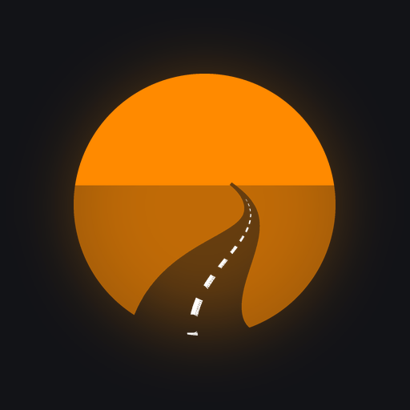

Google Mapsin ajo-ohjeet pyöreälle näytölle moottoripyörän ohjaustankoon.
Näytön laiteohjelmisto
1.2.4
Allekirjoitettu · ECDSA P-256
Päivittyy sovelluksen kautta
Asennus
- Lataa sovellus puhelimella ja avaa tiedosto.
- Salli tarvittaessa asennus tästä lähteestä (Asenna tuntemattomia sovelluksia).
- Jos ilmoitusten käyttöoikeus on harmaana: Asetukset → Sovellukset → Kaarre → ⋮ → Salli rajoitetut asetukset.
- Avaa Kaarre, käy läpi käyttöönotto ja yhdistä näyttö.
Jatkossa sovellus tarkistaa päivitykset itse ja päivittää myös näytön Bluetoothin kautta. Näyttö asentaa vain allekirjoitetun ohjelmiston ja palaa edelliseen versioon, jos uusi ei käynnisty.
Muutokset
- 1.10.2026 · Sovellus 1.2.3 · Näyttö 1.2.4Kappaleen vaihto ilman tyhjää välivaihetta: edellinen kansikuva pysyy näkyvissä ja uusi pyyhkiytyy sen päälle. Keskeytynyt kansikuvan siirto korjautuu itsestään heti.
- 1.10.2026 · Sovellus 1.2.2 · Näyttö 1.2.3Kappaletta vaihdettaessa edellinen kansikuva pysyy näkyvissä myös silloin, kun uutta kantta vasta valmistellaan puhelimessa.
- 1.10.2026 · Sovellus 1.2.1 · Näyttö 1.2.2Kappaletta vaihdettaessa edellinen kansikuva pysyy näkyvissä ja uusi pyyhkiytyy sen päälle – ei enää tyhjää välivaihetta. Sovellus muistaa viimeisimmät kannet, joten edelliseen kappaleeseen palatessa kansi tulee heti.
- 1.10.2026 · Näyttö 1.2.1Kappaleen nimen varjo vahvemmaksi koko näytön kansikuvan päällä. Ensimmäinen langaton päivitys.
- 1.10.2026 · Sovellus 1.2.0 · Näyttö 1.2.0Ensimmäinen julkaisu: päivitykset sovelluksen kautta (OTA), koko näytön albumin kansikuva, GPS-nopeus ja tasaisesti laskeva etäisyys käännökseen, neljä kellotaulua, puhelut ja musiikin ohjaus näytöltä.